run_synthcheck_app() opens an app that does the whole
synthcheck workflow without code. It starts with one question:
Do you already have real responses to this instrument?
The answer chooses one of two paths through the same tabs.
- With real data: Define an instrument and personas, generate synthetic respondents with one or more language models, benchmark them against the real data in the Compare tab, and save everything.
- Without real data: Generate synthetic respondents the same way, pretest the scale on them in the Pretest tab, run cognitive interviews with language models in the Interviews tab, and save everything.
| Tab | With real data | Without real data |
|---|---|---|
| About | The first question and the guided tour | The first question and the guided tour |
| 1. Instrument | The items and the response scale | The items and the response scale |
| 2. Personas | Who the synthetic respondents are | Who the synthetic respondents are |
| 3. Models | Generate the synthetic data | Generate the synthetic data, at several temperatures if you want |
| 4. | Compare: The benchmark | Pretest: Item screening and the designed structure |
| 5. | Export: Data, benchmark and R script | Interviews: Cognitive interviews with language models |
| 6. | Export: Data, pretest, interviews and R script |
This article walks through every tab on both paths. For worked examples, see the app demos.
The benchmark compares models and supports decisions about them. It does not show that synthetic data can replace a field test. The pretest and the interviews are screening aids: They point to items worth a second look, and a field test with real people still decides.
Starting the app
The app needs a few suggested packages:
install.packages(c("shiny", "bslib", "ellmer", "callr", "jsonlite"))
# optional: readxl and writexl for Excel files, cicerone for the guided tour
library(synthcheck)
res <- run_synthcheck_app()The app runs on your own computer and opens in your browser. You can pass real or synthetic data to it. Real data appear in the Compare tab and start the app on the path with real data. Synthetic data appear in the Compare and Pretest tabs:
res <- run_synthcheck_app(real = my_real_data, synthetic = my_earlier_run)When you close the app with the button in the Export tab,
res holds the generated data, the benchmark, the pretest,
the interviews, the path you chose, the instrument and the personas.
About
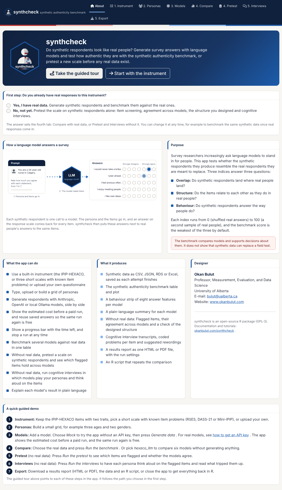
The app opens on the About tab. It explains what the app is for, lists what it can do and what it produces, and shows an animated picture of a language model answering survey items: A persona and the items go in, the model answers each item on the response scale, and synthcheck compares the answers with real people. A short guided demo lists the steps of both paths, and the designer’s contact details and a link to this website are at the side.
First step: Real data or not?
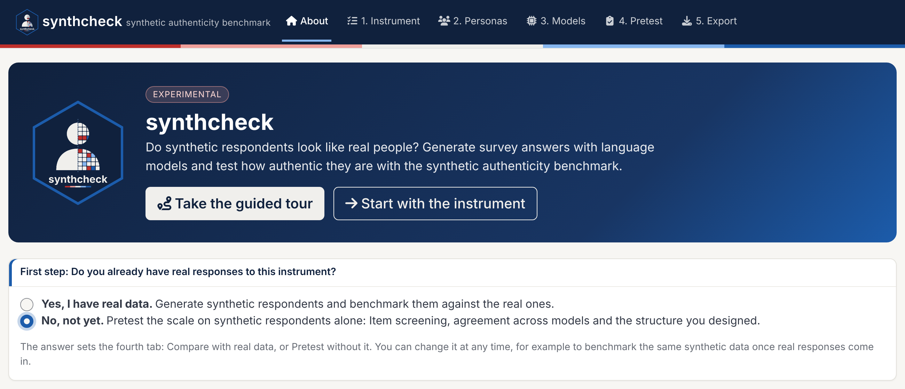
Do you already have real responses to this instrument? The answer sets the fourth tab:
- Yes, I have real data. The fourth tab is Compare, the benchmark against real people.
- No, not yet. The fourth tab is Pretest, pilot screening of the scale on synthetic respondents alone, and the fifth is Interviews, cognitive interviews in which language models play your personas. Export moves to the sixth tab, and Compare is hidden.
Tabs 1 to 3 and Export are the same on both paths. You can change the answer at any time: The data you generated stay in the session, so you can pretest a scale now and benchmark the same synthetic data once real responses come in.
The guided tour
Take the guided tour walks through the app one
control at a time and switches the tabs for you. It follows the path you
chose: With real data, it ends with the benchmark; without real data, it
shows the pretest and the interviews. To see the other path, change the
answer and start the tour again. The tour needs the cicerone package
(install.packages("cicerone")).
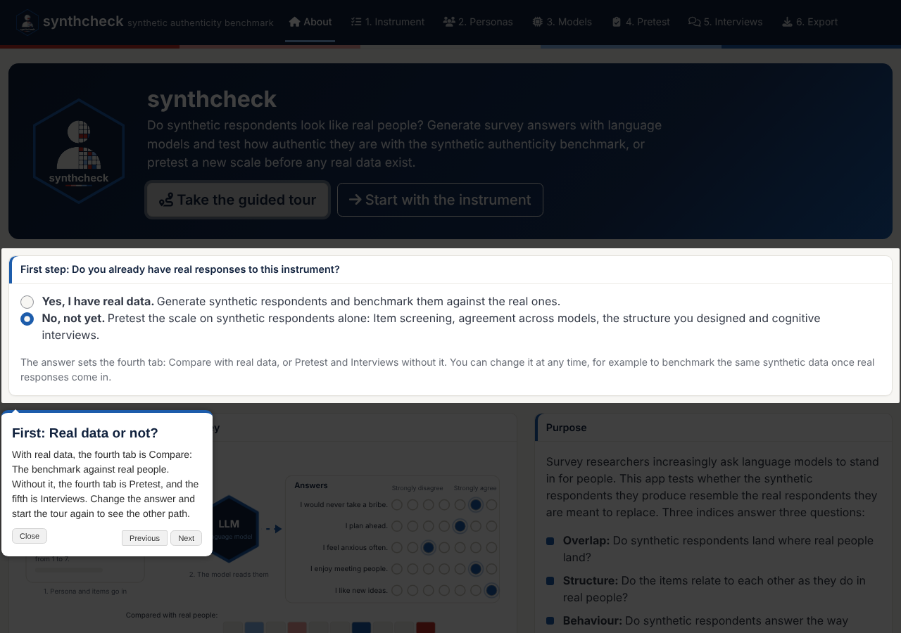
Start with the instrument skips the tour and opens the first tab.
1. Instrument
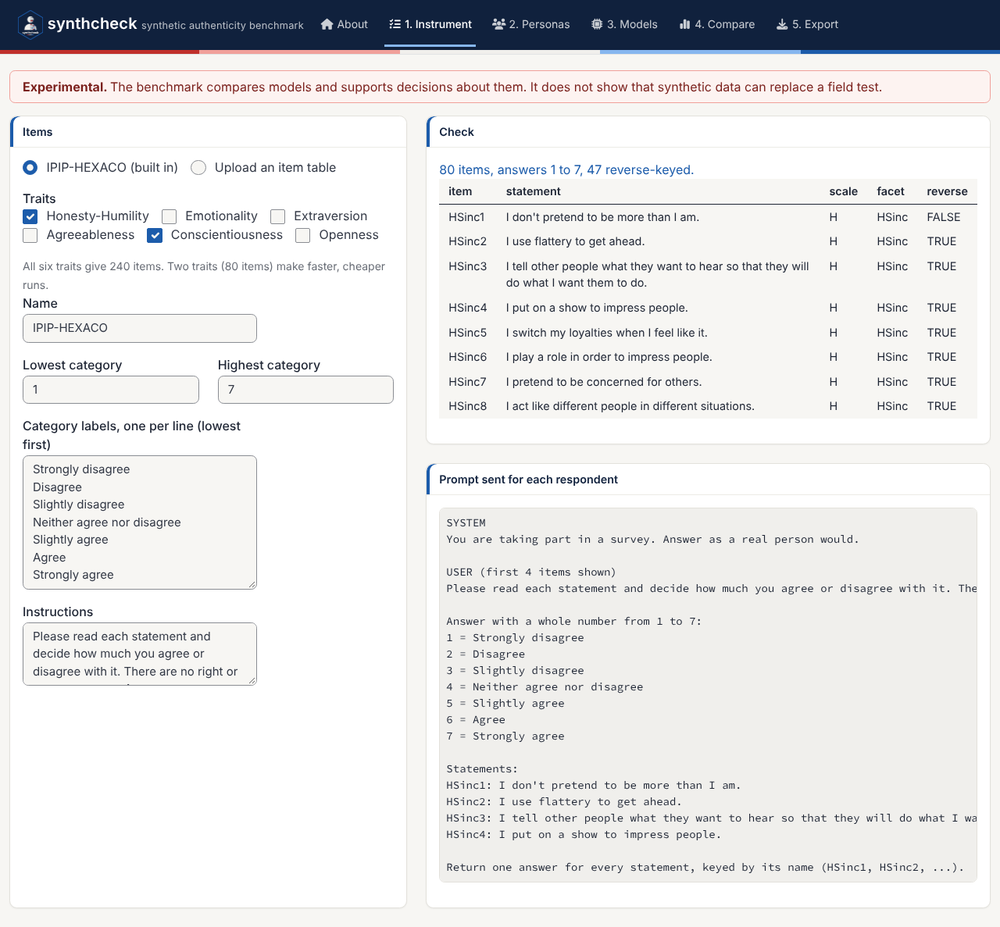
Choose the items on the left from the list:
- IPIP-HEXACO (built in): Pick the traits. Two traits give 80 items, all six give 240.
- Rosenberg Self-Esteem Scale, DASS-21 or Mini-IPIP (built in): Short scales whose item problems are well documented, such as the negative-wording method factor of the Rosenberg scale. Pick the subscales where there are several. The response scale, labels and instructions are filled in for you, and each comes with real responses for the Compare tab. See Short instruments with known item problems.
- Upload an item table: Your own questionnaire (below).
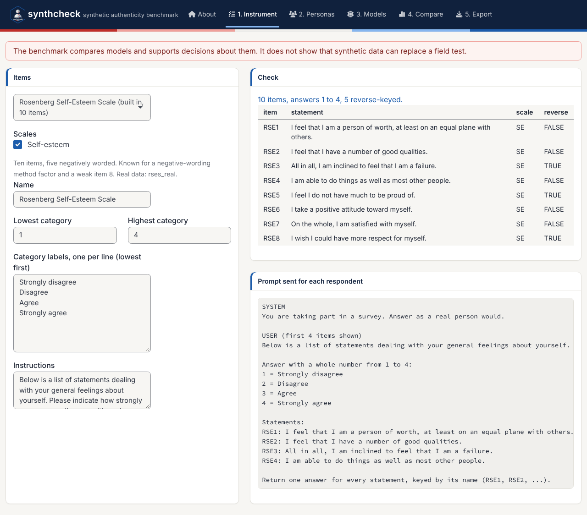
Set the lowest and highest category, the category labels and the instructions.
The right side checks the instrument and shows the prompt sent for each respondent, so you see exactly what a model will read.
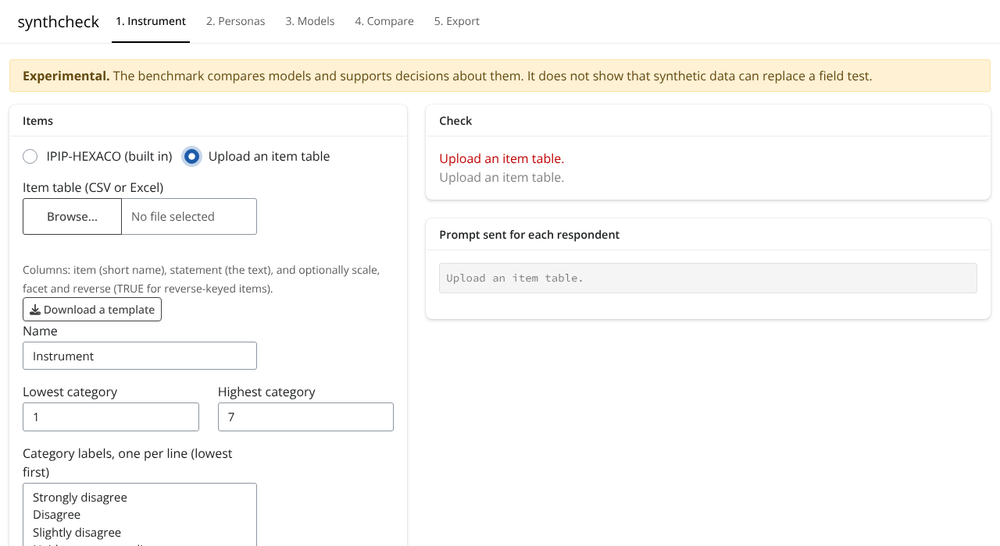
To use your own questionnaire, choose Upload an item
table and download the template. It has the columns
item (a short name), statement (the text), and
optionally scale, facet and
reverse (TRUE for reverse-keyed items). CSV
and Excel both work. The same template is in the package:
system.file("templates", "instrument_template.csv", package = "synthcheck")Without real data, the scale and reverse
columns matter more: They are the structure you designed, and the
Pretest tab checks whether it comes back in the synthetic answers.
2. Personas
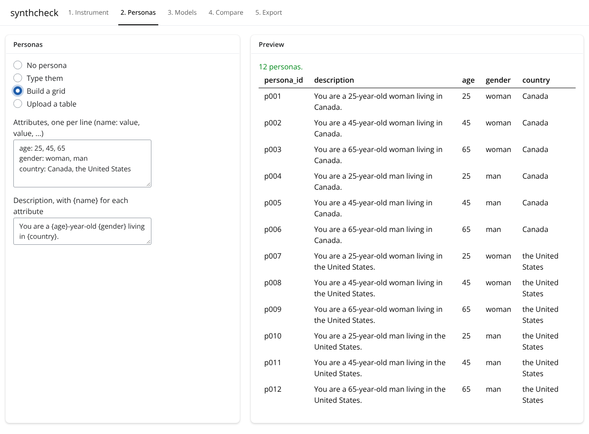
A persona is who the synthetic respondent is told to be. There are four ways to set them:
- No persona: Every respondent gets the same neutral prompt.
- Type them: One description per line.
-
Build a grid: List a few attributes
(
age: 25, 45, 65) and a description with{age}in it. The app makes every combination. -
Upload a table: A
descriptioncolumn, with optionalpersona_idand attribute columns. The attributes are kept in the generated data. The template ispersonas_template.csv.
On the path without real data, the same personas also take part in the cognitive interviews.
3. Models
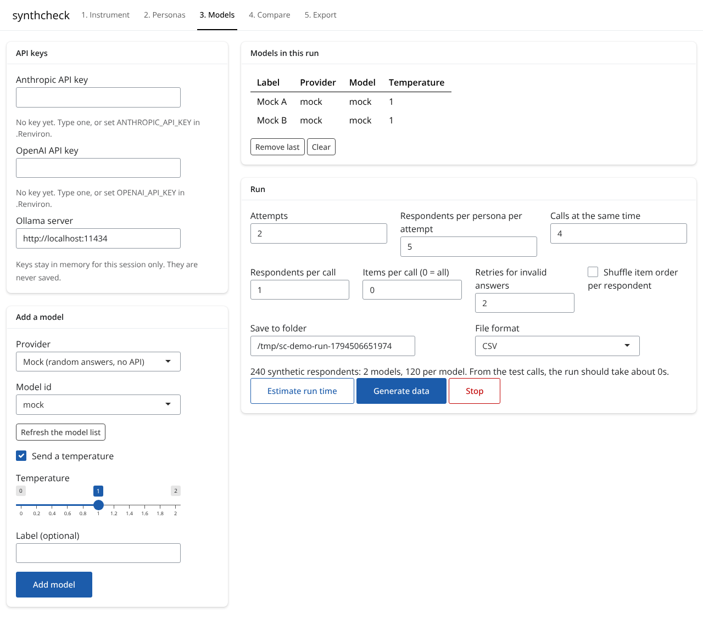
API keys. Type an Anthropic or OpenAI key, or set
ANTHROPIC_API_KEY and OPENAI_API_KEY in
.Renviron, and the app uses them without showing them.
Typed keys stay in memory for this session only. They are never written
to the saved data, the run settings, the report or the R script. Ollama
models run on your own computer and need no key. No key
yet? The link under the key fields opens Getting an API key, which walks through signing
up with OpenAI or Anthropic, adding credit, keeping the key private and
setting a spending limit.
Add a model. Pick a provider and a model id (or type one), set the temperature and an optional label, and click Add model. Add as many as you want to compare. Mock gives random answers without an API, which is useful for trying the app.
Several temperatures. Type a list such as
0.3, 0.7, 1.2 in Or several temperatures
to add the same model once per temperature. Without real data, the
Pretest tab then shows whether the flagged items hold across the
temperatures.
Run. Set the number of attempts (full passes over the personas) and the respondents per persona per attempt. The plan under the settings tells you how many respondents the run will make.
- Calls at the same time speeds up a run when the API allows it.
- Respondents per call above 1 is cheaper, but respondents in the same call may depend on each other. Keep 1 for independent respondents.
- Items per call splits a long instrument into blocks.
- Estimate run time sends one test call per model and tells you how long the whole run should take. It is also a quick check that the keys and model ids work.
What it costs. Under the plan, the app shows the
estimated cost of the run, from the number of calls, a
guess of their length and a dated price table
(estimate_cost() in R). Ollama and mock models are free.
Before a run with paid models, Generate data first
opens a box with the cost per model and asks you to confirm.
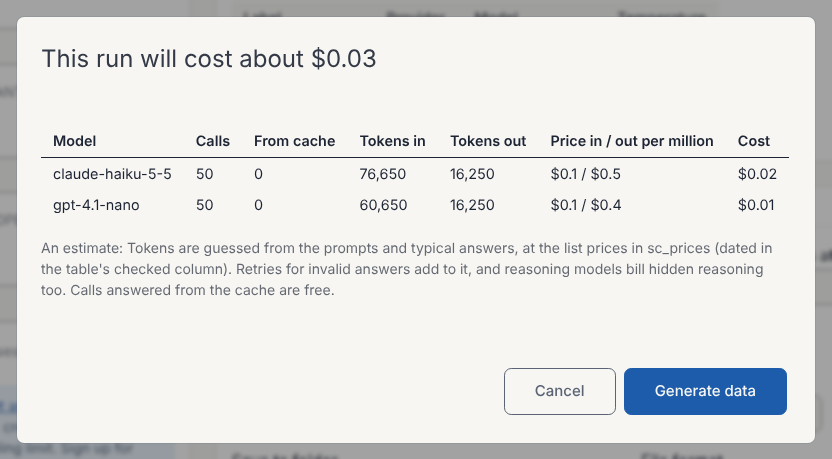
Saved answers (cache). Every answer is saved on disk. With Reuse saved answers (the default), the same run again reads them back: It gives the same data and costs nothing, and more attempts or respondents call the models only for the new ones. Ask again and replace them calls the models again, and Do not save or reuse turns the cache off. The line under the setting says how many answers are saved, and Clear the cache deletes them. Failed calls and mock answers are never saved. The cache holds answers only, never keys.
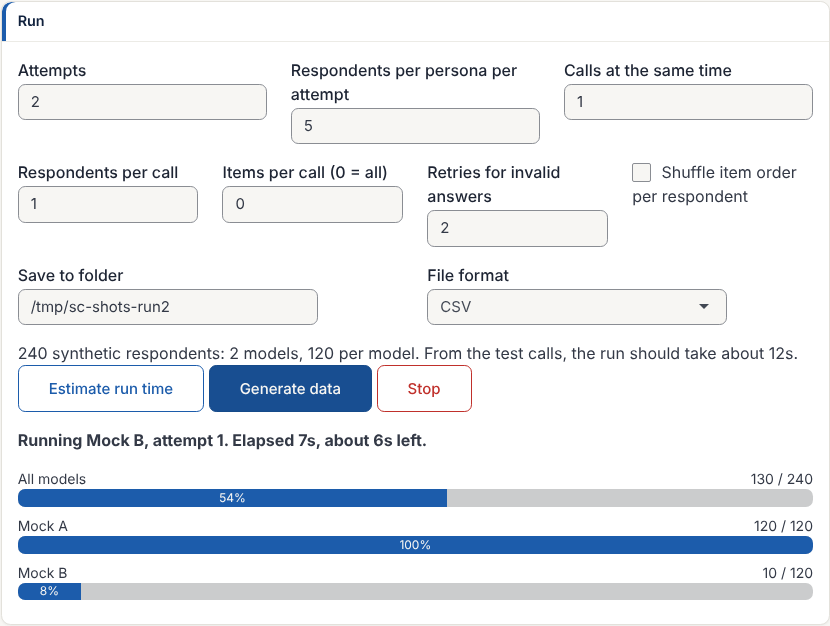
Generate data starts the run in a background R process, so the app stays responsive. The progress bar shows the respondents done and the time left, and Stop ends the run after the calls in progress. Every attempt is saved to the output folder as soon as it is done, so a stopped run keeps its finished attempts.
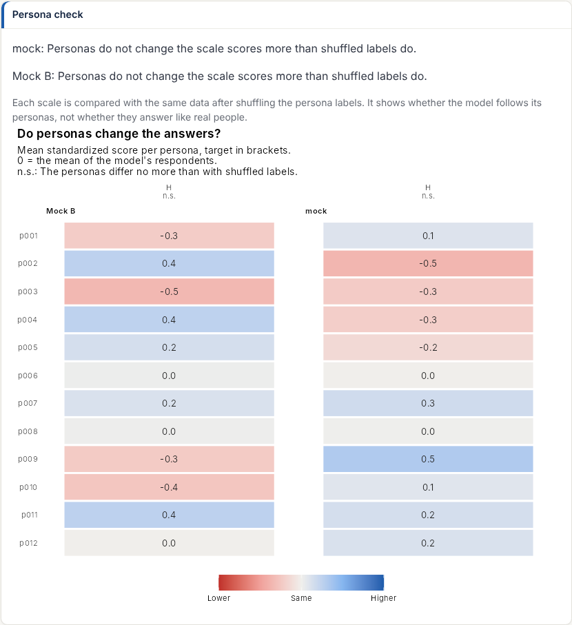
Persona check. After a run with two or more
personas, the last card checks whether the personas change the answers
(persona_fidelity()). For each model and scale, it compares
how much the scale scores differ between personas with the same data
after shuffling the persona labels. Each tile is a persona’s mean
standardized score: Red is lower than the model’s other respondents,
blue higher. “n.s.” under a scale means the personas do not separate on
it. Add columns such as target_C (1 = high, -1 = low) to
the persona table to check the direction too; the target then shows in
brackets. The check shows whether a model follows its personas, not
whether they answer like real people.
4. Compare (with real data)

Choose the real data (the built-in real responses to the instrument
of tab 1, for one country or all, data you passed to
run_synthcheck_app(), or an upload) and the synthetic data
(this session’s run, the built-in hexaco_llm, or files
saved by an earlier run). Then click Run the
benchmark.
The right side shows a plain-language summary per model, the synthetic authenticity benchmark with its table, and the behaviour strip. In the benchmark, tiles run from red (-100 or lower) through pale (0, no better than shuffled real answers) to blue (100, as close as a second sample of real people). In the behaviour strip, red means lower than real people, blue means higher, and pale means a match. Under each value, in small type, is its 95% interval, and the table adds the score’s interval: Two models whose score intervals overlap are not clearly apart, and the summary says so.
Benchmark settings:
- Score: The weakest column (the default), the mean or the geometric mean of the three columns.
-
Remove careless real respondents first: Compare
with real respondents after careless ones are flagged and removed
(
clean_real = TRUE). - Include person fit: Fits a graded response model per trait to the real data. It is slower; switch it off while you explore.
- Real splits and shuffled draws: How many draws set the 0 and 100 anchors. More is steadier and slower.
The benchmark tutorial explains the anchors and the score.
4. Pretest (without real data)
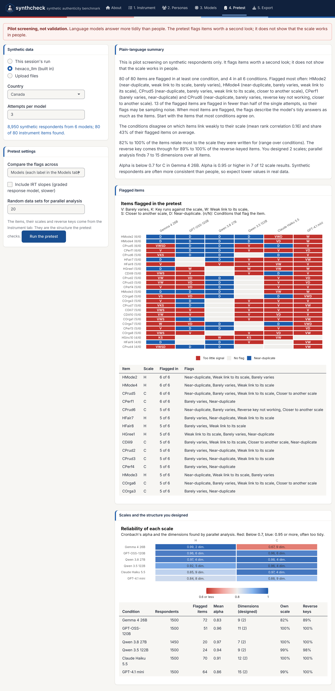
Without real data, the fourth tab runs
synthetic_pretest() on the synthetic data: This session’s
run, the built-in hexaco_llm, data you passed to
run_synthcheck_app(), or files saved by an earlier run.
Pretest settings:
- Compare the flags across: Models (each label in the Models tab), temperatures, personas, or nothing (pool all respondents). An item that is flagged under every condition is worth more attention than one flagged by a single model.
- Include IRT slopes: Fits a graded response model per scale. It is slower.
- Random data sets for parallel analysis: How many random data sets set the line that a dimension has to clear.
The items, scales and reverse keys come from the Instrument tab: They are the structure the pretest checks. Click Run the pretest.
The tab shows a plain-language summary, the flagged items (items that barely vary, link weakly to their scale, duplicate another item or work against their reverse key) with the number of conditions that flag each one, and the scales and the structure you designed: The reliability of each scale, the dimensions parallel analysis finds and whether the items and reverse keys follow the design. The pretest tutorial explains each result. It is pilot screening, not validation: Language models answer more tidily than people.
5. Interviews (without real data)
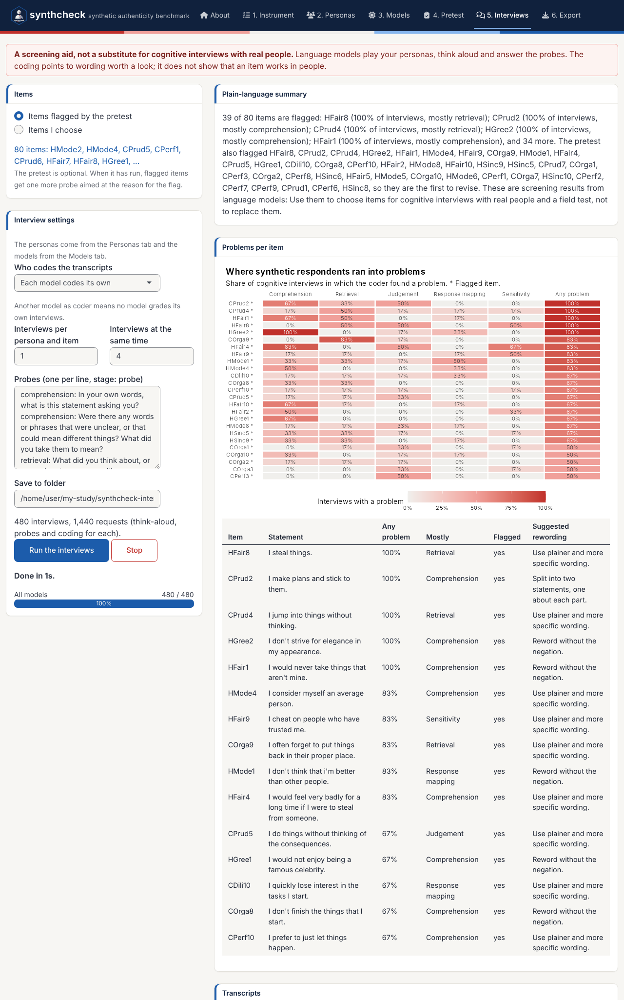
The Interviews tab runs cognitive_interview(). A
language model plays each persona from the Personas tab, thinks aloud
while it answers an item and answers a set of verbal probes. A separate
call then codes each transcript for comprehension, retrieval, judgement,
response-mapping and sensitivity problems.
Items. Interview the items flagged by the pretest, or choose items I choose from the instrument. The pretest is optional. When it has run, each flagged item gets one more probe aimed at the reason for the flag.
Interview settings. The personas come from the Personas tab and the models from the Models tab.
- Who codes the transcripts: Each model codes its own interviews, or one of the other models codes them all, so that no model grades its own work.
- Interviews per persona and item and Interviews at the same time set the size and the speed of the run. The plan under the settings counts the interviews and the requests (three per interview: Think-aloud, probes and coding).
-
Probes: One per line, as
stage: probe. Edit them, add your own or remove the ones you do not need.
Click Run the interviews. As on the Models tab, the plan shows the estimated cost, the app asks before a run with paid models, and saved answers are reused. A progress bar counts the interviews, and Stop ends the run.
The right side shows a plain-language summary, the problems per item (one row per item, one column per kind of problem, from pale to red as more interviews run into it) with a table of the share of interviews with a problem, the most common kind and a suggested rewording, and the transcripts: Pick an item to read each persona’s think-aloud, answer and probe answers, with the coding. The cognitive interviews tutorial explains the probes and the coding. It is a screening aid, not a substitute for cognitive interviews with real people.
Export
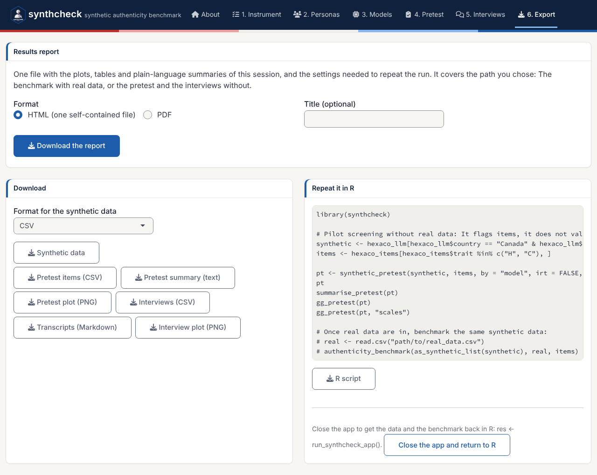
Results report saves one file with the plots, tables
and plain-language summaries of the session, and the settings needed to
repeat the run (the instrument, the personas, the models and their
temperatures, the generation run and the benchmark or pretest settings).
HTML is one self-contained file that opens in any browser; PDF needs
nothing beyond R. The report covers the path you chose: The benchmark
with real data, or the pretest and the interviews without. In R,
write_report() writes the same report.
Download the synthetic data in CSV, JSON, RDS or Excel. The other downloads follow the path:
- With real data: The benchmark table, the summary and the benchmark plot.
- Without real data: The pretest items, the pretest summary and the pretest plot, and the interviews (CSV), the transcripts (Markdown) and the interview plot.
Repeat it in R gives a script that reads the saved data and runs the same benchmark, or the same pretest and interviews, so the analysis can be checked and rerun without the app. Close the app and return to R hands everything back to the R session.